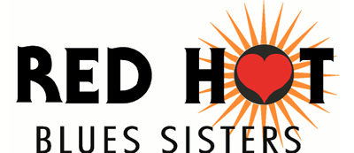

|  |
| Nominated Best Band 2006 - The hottest new band around |
|
|
Instrumentation
Suze Sims - Drums & Vocals
Teri Anne Wilson - Guitar & Vocals
Lissa Ramaglia - Bass & Vocals
Scotty Harris - Sax
Ricky Johnson, Chris Leighton, Jay Douglas - Drums
Biography
In the short time since the Red Hot Blues Sisters performed their first live show in 2004 at Highway 99 in Seattle, they have taken the local blues community by surprise with the power and depth of their musicianship.
Their innovative songwriting brings a fresh feel to the blues. Selective covers of traditional blues and R&B Soul standards shine like polished stones through the lens of the bands style & strong musicianship.
Recently featured live performances on the main stages of Portland Waterfront Blues Festival, Seattle’s Northwest Folklife, Blues by the Sea, Doc Maynard’s, The New Orleans and Beal St Northwest have continued to introduce the talents of RHBS to the Northwest music scene, resulting in extremely positive responses from ardent blues, rock and R&B fans.
Fronted by the hot and soulful vocals of Suze Sims and the searing rock/blues styles of Teri Anne Wilson on guitar; this group also features some of the finest North West musicians on the circuit including, Lissa Ramaglia, Scotty Harris, Chris Leighton, Doug Scoog.
Nominated for The Red Hot Blues Sisters have a guaranteed crowd pleasing show that is quickly gaining momentum, well-crafted songs with brilliant performances that are rapidly being picked up for airplay and a growing fan base!
Producers Bonnie Hayes and Tom Pfaeffle recently joined forces with Peace Code Records to produce their latest 2 song EP, “Hot Off the Press” which includes ‘Ocean Beach and See You’ composed by Suze & Teri. Bonnie Hayes is best known for her hit songs "Have A Heart" and "Love Letter," which restored Bonnie Raitt to superstardom with the multi-platinum, multi-Grammy-winning CD Nick of Time. Tom Pfaeffle is best known for his work with Heart and Queensrych. Together, they influenced an impressive sound on this EP!
Other releases by Red Hot Blues Sisters include:
“Flood In The Basement” – released May 2005 – Peace Code Records includes ‘Kiss My Dimple’ and ‘Lost & Found’
“Friends of the Holidays 2005” – released November 2005 – Compilation CD produced by Friends of the Holidays includes “Lost & Found” along with songs by artists Rod Cook & Toast, Randy Oxford Band, Stickshift Annie w/ Kimball and the & Blues Alliance.
Other Important Website
http://www.bigsismedia.com
Discography
'Flood in the Basement Blues'
Kiss My Dimple / Lost & Found
released by Peace Code Records 2005!
Pre-release "Hot off the Press" EP
available On Sale Now at Tower and CD Baby - Ocean Beach and See You -
producers - Bonnie Hayes, (Robert Cray, Bonnie Raitt) and Tom Pfaeffle (Queensyrche, Art Institute of Seattle)! |
|
|